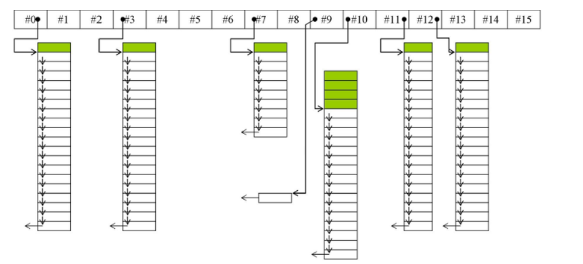
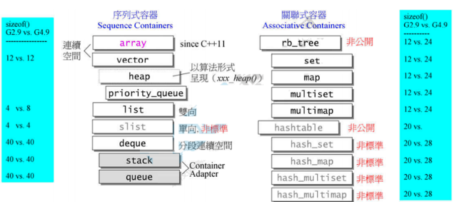
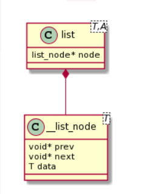
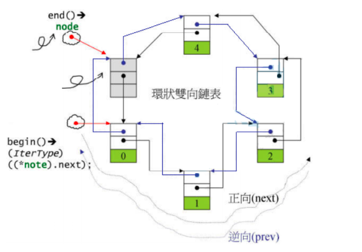
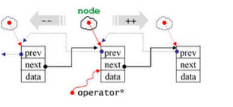

前言
学完基础学stl，嗯，学完了学内存管理和c++11啊啊啊啊啊啊啊啊啊啊啊啊啊啊啊啊啊啊啊啊啊啊啊啊
STL设计模式：OOP与GP
OOP(Object-Oriented Programming)和GP(Generic Programming)是STL容器设计中使用的两种设计模式.
- OOP的目的是将数据和方法绑定在一起,例如对
std::list容器进行排序要调用std::list::sort方法. - GP的目的是将数据和方法分离开来,例如对
std::vector容器进行排序要调用std::sort方法.
这种不同是因为std::sort方法内部调用了iterator的-运算,std::list的iterator没有实现-运算符,而std::vector的iterator实现了-运算符.
template<typename _RandomAccessIterator>
inline void sort(_RandomAccessIterator __first, _RandomAccessIterator __last) {
std::__sort(__first, __last, __gnu_cxx::__ops::__iter_less_iter());
}
inline void __sort(_RandomAccessIterator __first, _RandomAccessIterator __last, _Compare __comp) {
if (__first != __last) {
std::__introsort_loop(__first, __last,
std::__lg(__last - __first) * 2, // 对iterator进行减运算,std::list的iterator没有实现该运算
__comp);
std::__final_insertion_sort(__first, __last, __comp);
}
}
运算符重载和模板特化
见《侯捷面向对象下》
分配器
VC6.0的默认分配器std::allocator定义如下,可以看到VC6.0的分配器只是对::operator new和::operator delete的简单封装.
template<class _Ty>
class allocator {
public:
typedef _SIZT size_type;
typedef _PDFT difference_type;
typedef _Ty _FARQ *pointer;
typedef _Ty value_type;
pointer allocate(size_type _N, const void *) {
return (_Allocate((difference_type) _N，(pointer) 0));
}
void deallocate(void _FARQ *_P, size_type) {
operator delete(_P);
};
private:
inline _Ty _FARQ *_Allocate(_PDFT _N, _Ty _FARQ *) {
if (_N < 0) _N = 0;
return ((_Ty _FARQ *) operator new((_SIZT) _N * sizeof(_Ty)));
}
//...
};gcc2.9中的分配器std::allocator与VC6.0的实现类似,但std::allocator并非gcc2.9的默认分配器,观察容器源码,可以看到,gcc2.9的默认分配器为std::alloc.
template<class T, class Alloc = alloc>
class vector {
// ...
};
template<class T, class Alloc = alloc>
class list {
// ...
};
template<class T, class Alloc = alloc, size_t BufSiz = 0>
class deque {
// ...
};std::alloc的代码结构如下:
class alloc {
protected:
enum { _S_align = 8 };
enum { _S_max_bytes = 128 };
enum { _S_free_list_size = (size_t) _S_max_bytes / (size_t) _S_align };
union _Obj {
union _Obj *_M_free_list_link;
char _M_client_data[1]; // The client sees this.
};
// ...
}std::alloc内部维护一个链表数组,数组中的每个链表保存某个尺寸的对象,减少了调用malloc的次数,从而减小了malloc带来的额外开销.

在gcc4.9以后,默认分配器变为std::allocator,变回了对::operator new和::operator delete的简单封装.gcc2.9中的std::alloc更名为__gnu_cxx::__pool_alloc.
容器
STL容器的各实现类关系如下图所示,以缩排形式表示衍生关系(主要是复合关系).

List
gcc2.9中list及相关类的代码如下所示:

template<class T, class Alloc = alloc>
class list {
protected:
typedef __list_node<T> list_node;
public:
typedef list_node *link_type;
typedef __list_iterator<T, T &, T *> iterator;
protected:
link_type node;
};template<class T>
struct __list_node {
typedef void *void_pointer;
void_pointer prev;
void_pointer next;
T data;
};为实现前闭后开的特性,在环形链表末尾加入一个用以占位的空节点,并将迭代器list::end()指向该节点.

迭代器__list_iterator重载了指针的*,->,++,--等运算符,并定义了iterator_category、value_type、difference_type、pointer和pointer5个关联类型(associated types),这些特征将被STL算法使用.

template<class T, class Ref, class Ptr>
struct __list_iterator {
typedef __list_iterator<T, Ref, Ptr> self;
typedef bidirectional_iterator_tag iterator_category; // 关联类型1
typedef T value_type; // 关联类型2
typedef ptrdiff_t difference_type; // 关联类型3
typedef Ptr pointer; // 关联类型4
typedef Ref reference; // 关联类型5
typedef __list_node <T>* link_type;
link_type node; // 指向的链表节点
reference operator*() const { return (*node).data; }
pointer operator->() const { return &(operator*()); }
self& operator++() {
node = (link_type) ((*node).next);
return *this;
}
self operator++(int) {
self tmp = *this;
++*this;
return tmp;
}
};注意在这里前置++运算符返回左值,而后置++返回右值,这与基础类型的++和--运算一致.
int i(6);
i++++; // 被解析为 ++(++i), 能通过编译
++++i; // 被解析为 (i++)++, 不能通过编译
list<int> c;
auto ite = c.begin();
++++ite; // 被解析为 ++(++ite), 能通过编译
ite++++; // 被解析为 (ite++)++, 不能通过编译vector
容器vector的代码如下:
template<class T, class Alloc= alloc>
class vector {
public:
typedef T value_type;
typedef value_type* iterator;
typedef value_type& reference;
typedef size_t size_type;
protected:
iterator start;
iterator finish;
iterator end_of_storage;
public:
iterator begin() { return start; }
iterator end() { return finish; }
size_type size() const { return size_type(end() - begin()); }
size_type capacity() const { return size_type(end_of_storage - begin()); }
bool empty() const { return begin() == end(); }
reference operator[](size_type n) { return *(begin() + n); }
reference front() { return *begin(); }
reference back() { return *(end() - 1); }
};
容器vector的迭代器start指向第一个元素,迭代器finish指向最后一个元素的下一个元素,这两个迭代器对应begin()和end()的返回值,维持了前闭后开的特性.
vector对使用者是连续的,因此重载了[]运算符.
vector的实现也是连续的,因此使用指针类型做迭代器(即迭代器vector
vector::push_back方法先判断内存空间是否满,若内存空间不满则直接插入;若内存空间满则调用insert_aux函数先扩容两倍再插入元素
void push_back(const T &x) {
if (finish != end_of_storage) { // 尚有备用空间,则直接插入,并调整finish迭代器
construct(finish, x);
++finish;
} else // 已无备用空间则调用 insert_aux 先扩容再插入元素
insert_aux(end(), x);
}insert_aux被设计用于在容器任意位置插入元素,在容器内存空间不足会现将原有容器扩容.
template<class T, class Alloc>
void vector<T, Alloc>::insert_ux(iterator position, const T &x) {
if (finish != end_of_storage) { // 尚有备用空间,则将插入点后元素后移一位并插入元素
construct(finish, *(finish - 1)); // 以vector最后一个元素值为新节点的初值
++finish;
T x_copy = x;
copy_backward(position, finish - 2, finish - 1);
*position = x_copy;
} else {
// 已无备用空间,则先扩容,再插入
const size_type old_size = size();
const size_type len = old_size != 0 ?: 2 * old_size:1; // 扩容后长度为原长度的两倍
iterator new_start = data_allocator::allocate(len);
iterator new_finish = new_start;
try {
new_finish = uninitialized_copy(start, position, new_start); // 拷贝插入点前的元素
construct(new_finish, x); // 插入新元素并调整水位
++new_finish;
new_finish = uninitialized_copy(position, finish, new_finish); // 拷贝插入点后的元素
}
catch (...) {
// 插入失败则回滚,释放内存并抛出错误
destroy(new_start, new_finish) :
data_allocator::deallocate(new_start, len);
throw;
}
// 释放原容器所占内存
destroy(begin(), end());
deallocate();
// 调整迭代器
start = new_start;
finish = new_finish;
end_of_storage = new_start + len;
}
};